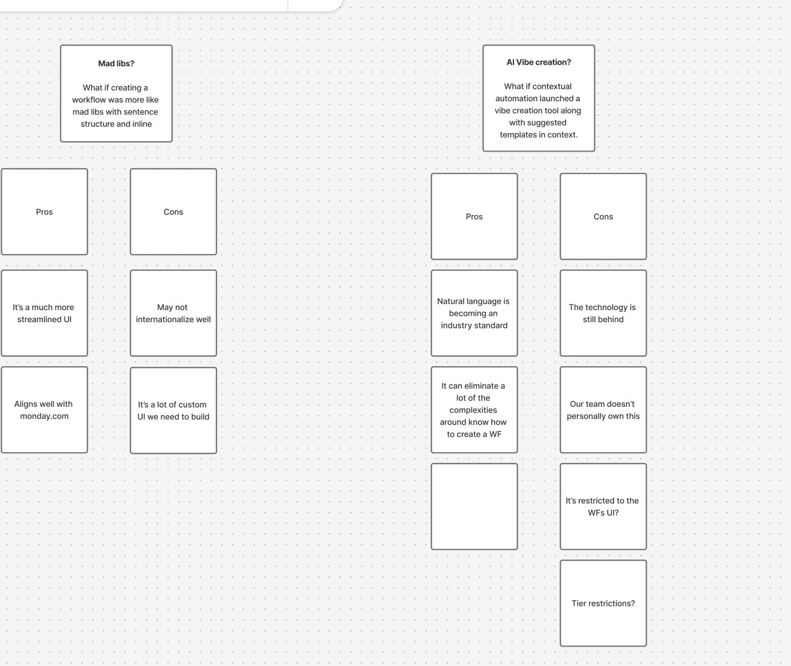
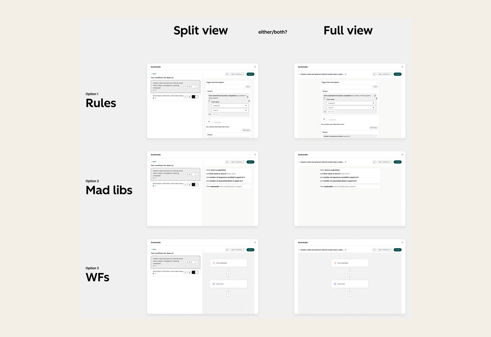
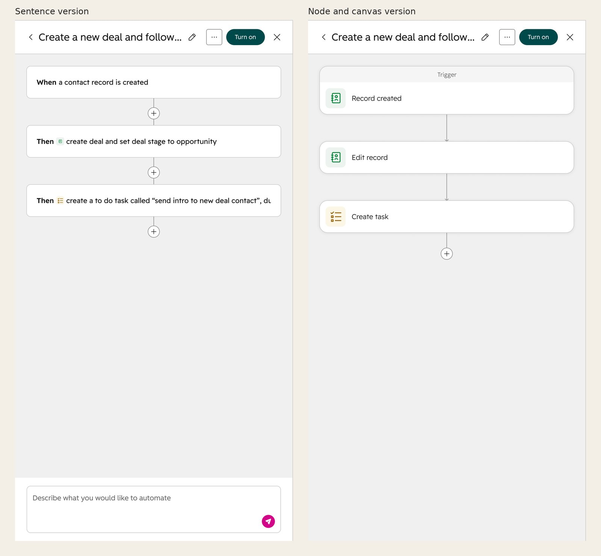

My role
I led design for the Automate panel and co-led the vision with my PM. I worked with six front-end and back-end engineers, and with partner product teams who reviewed the design and placement of the panel on their pages.
I owned the interaction and visual design, from the first concepts in Lovable to the final specs in Figma. I also ran the research, wrote the framework for how AI recommendations explain themselves, and built the rulebook and agent skill that write each automation's sentence.
I started on the project in February 2026. The panel went to beta on July 23 and launched to all Starter customers by July 30, and I kept improving it through October.
01 · Context
Starter customers have a business to run and no time to learn automation
HubSpot Starter is the entry-level paid plan, used by more than 150,000 customers, mostly founders and early hires at companies with 1 to 25 people. They’re wearing a lot of hats, and their attention is on finding customers and growing the business. Learning a tool like HubSpot, and automation in particular, feels like a big investment of time they don’t have. What they need is simple: leads that don’t fall through the cracks, deals that get followed up on, and tasks that get created without doing it manually.
02 · Problem
Starter customers were leaving because finding automation was an Easter egg hunt
HubSpot was losing Starter customers, and fewer new accounts were signing up. When an analyst dug into why customers were leaving, about a third were leaving because they didn't have the automation they needed to run their business. With fewer customers staying and fewer coming in, fewer were upgrading to Pro, and upgrades are a big part of how HubSpot keeps customers and grows revenue.
Much of what they needed was already in Starter, but customers couldn't find it, because Starter didn't have a central Workflows app. Instead, their automation was scattered across five different patterns. Each one had its own UI, its own entry point, and its own permissions. Some lived in settings, some lived inside individual apps, and some weren't visible anywhere. One customer described finding the automations tied to their records as "a little bit of an Easter egg hunt." Before this project, my team built a home page for automation that pointed customers to all of these tools. It helped them find automation, but it couldn't change how scattered the tools behind it were.
"A little bit of an Easter egg hunt."
Customer, describing how they found existing automations
Automating a simple task meant leaving your work to find the right screen, figuring out how that screen worked, and then coming back later to check what was running. Even our own teams had trouble keeping track of where automations lived. Adoption stayed low, and Starter customers who couldn't get what they needed were leaving to find other tools.
We measured progress with two numbers: the share of Starter customers who created a workflow, which we aimed to raise from 60% to 70%, and the share who turned one on.
The churn analysis and our audit told us what was wrong. What we didn't know yet was whether customers would find and use automation if it lived on the pages where they already work.
How might we make automation easy for Starter customers to find and use, so more customers sign up and stay, and upgrading to Pro feels like a natural next step?
03 · Strategy
It turned out every automation was a workflow
My PM and I started with a brainstorm on how to make automation easy for Starter customers to find and use.
The idea that shaped our approach was that they're all workflows. Every embedded automation, wherever it showed up, could be backed by a real workflow. That meant someone could start with something simple on a deal page and later open the same automation in the full Workflows app without rebuilding it, which would also make the move to Pro easier.
From there I proposed a single Automate experience that would look and work the same on every page where people already do their work. AI-generated recommendations, based on how each customer used their account, would show them where to start.
04 · Concept validation
We had to earn a button on another team's page
We tested the idea in two steps before building the panel. The first was about where the Automate button would live. The deal records page belonged to another team, who had been simplifying the record pages by moving buttons into menus to cut clutter. They worried a new button would add clutter without enough people getting value from it, and saw a rise in clicks as a vanity metric that wouldn't show customers found it useful.
So we ran an A/B test that moved the Automate button from settings onto the deal records page. Discovery went up 3x, and activation, meaning customers created a workflow, went up 2x. The result was statistically significant. The activation result showed that people who found the button went on to build automations, and we used it to show the team that owned the page, and their leadership, that the button was worth the space.
We then tested our first node and card design concept for the Automate panel with 12 customers, to check whether the new builder was easy to understand and use. Having automation right on the page made sense to them, and pre-filling the trigger from the record they were viewing made the biggest difference. One person said, "It's remembered all the context I've gone through. I haven't got to reselect or hunt for it."
"It's remembered all the context I've gone through. I haven't got to reselect or hunt for it."
Customer, concept test
One finding changed our plans: recommendations felt like ads unless they fit what the person was doing and explained why they mattered. That led to the recommendation framework in the next chapter.
05 · Key decisions
My team lost the builder debate, so I made the winning version work
Sentences or nodes
Partner teams and leadership thought the builder looked too technical, and that writing each automation as a plain sentence ("When a deal moves to Closed Won, create a task for the deal owner") would make it easier. My team didn't think rewording triggers and conditions would make them easier to understand. We wanted to build on the node-and-card pattern people already knew from the Workflows app, so it would be easier to learn and customers who upgraded to Pro would find the full app familiar. Our first brainstorm also listed the downsides of sentences: lots of custom UI to build, and they might not translate well.


We took the stakeholders' feedback and built two Lovable prototypes to test both concepts with customers and see whether one was actually easier to use. The results were split. People who liked the sentence version said it felt "less like programming and more like just editing a Word doc." People who liked the node and canvas version said, "Makes me feel like I am building a workflow. Nodes are familiar."
"Less like programming and more like just editing a Word doc."
Customer who preferred the sentence version
"Makes me feel like I am building a workflow. Nodes are familiar."
Customer who preferred the node and canvas version
The test also showed something I didn't expect: the builder's design changed how people used AI. In the sentence version, people typed their changes to the AI. In the node and canvas version, they edited the cards directly.

With customers split, we went with the sentence version the stakeholders favored.
Making the sentence version work
I led the visual design from there, starting with how the sentences should look. I tried a few builder layouts, from plain sentences to each step in its own card, and several styles for the parts people could edit, including tinted chips, bold underlined text, and dashed outlines for empty fields.
My biggest concern had been scale, since every action needs its own sentence. So I built a rulebook and an agent skill that read an action's definition (its field labels, input order, and dependencies) and write its sentence automatically, for every existing and future action. The definition decides the structure, and the skill only handles the grammar.
Translation was the tradeoff we accepted. Each sentence follows the order of the fields in the form, so translators can change the words but can't reorder them. In languages with a different word order, some sentences read less naturally.
Recommendations that explain themselves
Because recommendations felt like ads in research, I wrote a framework for how they explain themselves. Each one says what it will do for the business, never why HubSpot picked it. Accounts with enough activity see real evidence, like "28x this week deal owners were manually assigned," and newer accounts get suggestions that teach good habits instead.
06 · Final design
Automation now reads like a sentence and lives where the work happens
We finalized the visual and interaction design around the question we started with: making automation easy to find and use.
We created a globally recognizable button that could be added to any app, and it passes that app's context into the Automate panel. Customers can start from suggestions based on that context and their team's activity, or create an automation from scratch or from a template. Picking one fills in the trigger based on where they opened the panel. Each automation reads as a sentence with the editable parts highlighted, so they can change a field in place, pull in data from the trigger, or ask the assistant beside it to make the change. Automations already set up for that page are listed below the suggestions.
The panel went to beta on July 23, 2026, and reached every Starter account by July 30.
07 · Impact
Starter customers built twice as many workflows a week
Through the end of August, Starter customers created twice as many workflows each week as they did before the panel launched, and 72% of the workflows built in the panel used features Starter didn't have before. About a third of the workflows started in the panel went live. The ones that started from an AI recommendation went live 45% of the time, about twice the rate of workflows built from scratch.
The panel was part of a bigger push on Starter that started with the Starter version of the Automation Overview in January. From January to August, the share of Starter customers who created a workflow rose from 60% to 75%, beating our 70% goal, and the share who turned one on rose from 40% to 60%.
We tracked upgrades to Pro as well, but I don't have final results to share.
We built the panel so other teams could reuse it, and Agent Hub Starter did. It launched on September 21 with the panel as its builder, and gave Starter customers one place to create and manage all their workflows for the first time. The number of workflows turned on each week more than tripled in the weeks after.
Reflection
What I'd do differently
We looked at much more than ease of use. Our brainstorm weighed build time, scalability, and translation. But we didn't make that case strongly enough. If I'd laid out the pros, cons, and tradeoffs of each direction clearly for stakeholders, the conversation would have been about those tradeoffs.
I'd also test more ideas, and test them sooner. Putting several directions in front of customers early would have given everyone the same evidence to work from.
Once we committed to the sentence version, my job was to make it work. The scaling problem I'd worried about is what led me to build the rulebook and skill.